|
ANS Immersed Finite Element Method
|


|
|
ANS Immersed Finite Element Method
|
|
We present the implementation of a solution scheme for fluid-structure interaction problems via the finite element software library deal.II. Specifically, we implement an immersed finite element method in which two independent discretizations are used for the fluid and immersed deformable body. In this type of formulation the support of the equations of motion of the fluid is extended to cover the union of the solid and fluid domains. The equations of motion over the extended solution domain govern the flow of a fluid under the action of a body force field. This body force field informs the fluid of the presence of the immersed solid. The velocity field of the immersed solid is the restriction over the immersed domain of the velocity field in the extended equations of motion. The focus of this paper is to show how the determination of the motion of the immersed domain is carried out in practice. We show that our implementation is automatically obtained from the choice of finite element spaces over the immersed solid and the extended fluid domains. We present a few results concerning the accuracy of the proposed method. For a careful discussion of the proposed approach see Heltai, L. and F. Costanzo (2012), "Variational implementation of immersed finite
element methods," Computer Methods in Applied Mechanics and Engineering, 229–232, p. 110–127, which we will denoted by [HC2012].
Fluid and Solid Domains. Referring to the figure below, \(B_{t}\) represents the configuration of a regular body at time \(t\). \(B_{t}\) is a (possibly multiply connected) proper subset of a fixed control volume \(\Omega\): \(\Omega\setminus B_{t}\) is filled by a fluid and \(B_{t}\) is an immersed body. Following common practice in continuum mechanics, we refer to \(B_{t}\) as the current configuration of the immersed body. By contrast, we denote by \(B\) the reference configuration of the immersed body. We denote the position of points in \(B\) by \(s\), whereas we denote the position at time \(t\) of a point \(P\) in \(\Omega\) by \(x_{P}(t)\). For the examples in the results section we take \(B\) to coincide with the initial configuration \(B_{0}\).
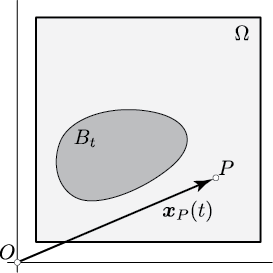
|
Motion of the Immersed Body. The motion of the solid is described by a function \(\chi(s,t)\), which gives the position \(x\) at time \(t\) of a particle of the immersed domain with position \(s\) in the reference configuration \(B\), i.e., \(x = \chi(s,t)\) for \(s \in B\). The deformation gradient is the tensor \(F = \nabla_{s} \chi(s,t)\), where \(\nabla_{s}\) denotes the gradient operator relative to position in the reference configuration. We denote the determinant of \(F(s,t)\) by \(J(s,t)\) and we assume that \(J(s,t) > 0\) for all \(s \in B\) and \(t\). From a practical viewpoint, as it is often done in solids mechanics, we describe the motion of the body through its displacement function. We denote the displacement by \(w(s,t)\). The relation between \(\chi(s,t)\) and \(w\) is as follows:
\[ x = s + w(s,t). \]
From the above relation we have that \(F(s,t) = I + \nabla_{s} w(s,t)\), where \(I\) is the identity tensor.
Constitutive Equations. The fluid is assumed to be Newtonian so that its Cauchy stress is \(\sigma_{f} = -p I + \eta [\nabla_{x} u + (\nabla_{x} u)^{T}]\), where \(p\) is the Lagrange multiplier for the enforcement of incompressibility, \(\eta\) is the dynamic viscosity, \(\nabla_{x}\) is the gradient operator relative to position in the current configuration, and \(u\) is the velocity field. For a Newtonian fluid, \(p\) is also the pressure (mean normal stress). The immersed solid is assumed to be incompressible and viscoelastic, with the viscous response identical to that of the fluid. The elastic response is assumed to be admit a strain energy \(W_{s}^{e}(F)\), which we assumed to be a convex function of the deformation gradient. Hence the Cauchy stress in the solid is given by \(\sigma_{s} = - p I + \eta [\nabla_{x} u + (\nabla_{x} u)^{T}] + \sigma_{s}^{e}\), with \(\sigma_{s}^{e} = J^{-1} P_{s}^{e} F^{-T}\), where \(P_{s}^{e} = \partial W_{s}^{e}/\partial F\) is the first Piola-Kirchhoff stress tensor of the solid.
Velocity field and Displacement of the Immersed Body. The velocity field \(u(x,t)\), with \(x \in \Omega\), represents that velocity of the particle occupying the point \(x\) at time \(t\). As such, this field describes the velocity of the fluid for \(x \in \Omega/B_{t}\) and the velocity of the solid for \(x \in B_{t}\). Therefore, using the displacement function \(w(s,t)\), for \(s \in B\) and for al \(t\), we have
\[ u(x,t)\big|_{x = s + w(s,t)} = \frac{\partial w(s,t)}{\partial t}. \]
Conditions at the Boundary of the Immersed Body. The boundary of the immersed body is viewed as a material surface. Therefore, the balance of linear momentum requires that the traction field be continuous across the boundary of the immersed body. In addition, we assume that there is no slip between the immersed body and the surrounding fluid.
Governing Equations: Strong Form. The motion of the system is governed by the following three equations, which, respectively, represent the balance of linear momentum, balance of mass accounting for incompressibility, and velocity compatibility:
\[ \nabla \cdot \sigma(x,t) + \rho b = \rho \biggl[\frac{\partial u(x,t)}{\partial t} + (\nabla u(x,t)) u(x,t) \biggr] \quad {\rm in}~\Omega,\quad \nabla \cdot u(x,t) = 0 \quad {\rm in}~\Omega, \quad u(x,t)\big|_{x = s + w(s,t)} = \frac{\partial w(s,t)}{\partial t} \quad {\rm in}~B, \]
where "\f$\nabla_{x} \cdot\f$" denotes the divergence operator (relative to position in the current configuration), \(\rho\) is the density (here assumed to be a constant), \(b\) is a (prescribed) body force field, and where \(\sigma(x,t)\) is the Cauchy stress field in the entire domain \(\Omega\), i.e., \(\sigma(x,t) = \sigma_{f}(x,t)\) for \(x \in \Omega/B_{t}\) and \(\sigma(x,t) = \sigma_{s}(x,t)\) for \(x \in B_{t}\).
As far as boundary conditions are concerned, we assume that a velocity and a traction distribution are prescribed on complementary subsets of the boundary of \(\Omega\). Specifically, letting \(\partial \Omega_{D} \cup \partial \Omega_{N} = \partial \Omega\), with \(\partial \Omega_{D} \cap \partial \Omega_{N} = \emptyset\),
\[ u(x,t) = u_{g}(x,t)~{\rm for}~ x\in \partial \Omega_{D} \quad{\rm and}\quad \sigma(x,t) n(x,t) = \tau_{g}(x,t)~{\rm for}~x \in \partial \Omega_{N}, \]
where \(u_{g}\) and \(\tau_{g}\) are prescribed velocity and tractions distributions, and where \(n\) denotes the outward unit normal to the \(\partial \Omega\).
The primary unknowns of the problem are the velocity field \(u(x,t)\) in \(\Omega\), the displacement field \(w(s,t)\) in \(B\), and the Lagrange multiplier field \(p\). For these we select appropriate function spaces \(V\), \(Y\), and \(Q\) (for details see [HC2012]), respectively. With this in mind, the weak formulation from which the discrete formulation is derived is as follows:
\[ \int_{\Omega} \rho(\dot{u}(x,t) - b(x,t)] \cdot v(x,t) - \int_{\Omega} p(x,t) \, \nabla_{x} \cdot v(x,t) + \int_{\Omega} \eta [\nabla u(x,t) + (\nabla u(x,t))^{T}] \cdot \nabla v(x,t) - \int_{\partial \Omega_{N}} \tau_{g}(x,t) \cdot v(x,t) + \int_{B} P_{s}^{e}(s,t) F^{T}(s,t) \cdot [\nabla_{x} v(x,t)\big|_{x = s + w(s,t)}] = 0, \]
\[ \int_{\Omega} (\nabla_{x} \cdot u ) \; q = 0, \]
\[ \Phi_{B} \int_{B} \biggl(\frac{\partial w(s,t)}{\partial t} - u(x,t)\big|_{x = s + w(s,t)} \biggr) \cdot y = 0, \]
for all \(v \in V_{0}\), \(y \in Y\), and \(q \in Q\). We observe that, since \(F = I + \nabla_{s} w(s,t)\), \(P_{s}^{e}\) is a function of the displacement gradient \(\nabla_{s} w\). Finally, \(\Phi_{B}\) is a constant needed to ensure that the dimensions of the equations are homogeneous with the dimensions of the rest of the equations.
The above weak formulation can be viewed as consisting of a typical formulation for the Navier-Stokes equations with some nonstandard terms. The latter are the last term on the left-hand of the first equation, which can be interpreted as a body force distribution that informs the fluid of the presence of the solid, and the very last equation, which is crucial for the tracking of the motion of the immersed body. What makes these terms unusual is the fact that, in the implementation of the discrete formulation, they require the evaluation of integrals over the triangulation of the domain \(B\) of functions defined over the triangulation of the domain \(\Omega\). In the next section we provide a discussion of how this is implemented in practice.
In [HC2012] we have discussed in detail the fact that the discrete formulation derived from the above weak formulation requires a careful treatment of the term
\[ \int_{B} P_{s}^{e}(s,t) F^{T}(s,t) \cdot [\nabla_{x} v(x,t)\big|_{x = s + w(s,t)}] \]
to yield a stable formulation. Specifically, it was shown that the above term should be viewed as the composition of two operators: (i) an "elastic" operator defined through the following term
\[ \int_{B} P_{s}^{e}(s,t) \cdot \nabla_{s} y, \]
and (ii) a "spread" operator whose definition stems from the last equation of the of the weak formulation (for details see, in particular, Remark 9 and Theorem 4 in [HC2012]). The code in the present example includes the determination of the elastic and spread operators as well as their composition.
The implementation of the various terms that are common to the Navier-Stokes equations is done in a standard fashion and will not be discussed here. As alluded above, here we limit ourselves to the description of how to carry out the integration over \(B\) of functions that are available through their finite element representation over the triangulation of \(\Omega\).
Referring to the third equation in the weak formulation, let's consider the term
\[ \Phi_{B} \int_{B} u_{h}(x,t)\big|_{x = s + w_{h}(s,t)} \cdot y_{h}, \]
where \(u_{h}\) denotes the finite element representation of \(u\) given by interpolation functions supported over the triangulation \(\Omega_{h}\) of \(\Omega\), and where \(y_{h}\) denotes shape functions supported over the triangulation \(B_{h}\) of the domain \(B\): the construction of the above term draws information from two independent triangulations. The above integral is computed by summing contributions from each cell \(K\) of \(B_{h}\). Each of these contributions is a sum over the \(N_{Q}\) quadrature points. We illustrate this via the following figure:
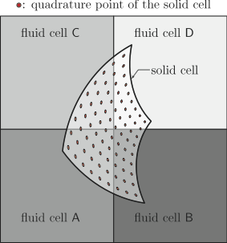
|
In our code, for each cell of the immersed body, we start by determining the position of the quadrature points of the element corresponding to the cell at hand. The position of the quadrature point is determined both relative to the reference unit element and relative to the global coordinate system adopted for the calculation, through the mappings:
\[ s_{K}: \hat{K} := [0,1]^{d} \mapsto K \in B_{h}, \quad{\rm and}\quad s + w_{h}: K \mapsto {\rm current~position~of~solid~cell}, \]
where \(\hat{K}\) is the reference unit element and \(d\) is the spatial dimension of the immersed solid. These maps allow us to determine the global coordinates of the quadrature points. These coordinates are then passed to a search algorithm that identifies the cells in \(\Omega_{h}\) that contain the points in question. In turn, this identification allows us to evaluate the functions \(v_h\). The overall operation is illustrated in the figure above where we show a cell of \(B_{h}\) straddling four cells of \(\Omega_{h}\) denoted fluid cells A–D. The quadrature points over the solid cell are denoted by filled circles. The contribution to the above integral due to the solid cell is then computed by summing the partial contributions corresponding to each of the fluid cells intersecting the solid cell in question. The implementation of an efficient search algorithm responsible for identifying the fluid cells intersecting an individual solid cell is the only technically challenging part of the procedure. We use the built in facilities of the deal.II library to perform this task. Once the fluid cells containing the quadrature points of a given solid cell are found, we determine the value of \(v_{h}\) at the quadrature points using the interpolation infrastructure inherent in the finite element representation of fields defined over \(\Omega_{h}\). The deal.II class we use for this implementation is the FEFieldFunction.
We report the results obtained by running our code with the parameter file prms/RingEqm_XXX_fref_Y_param.prm, where XXX is either dgp or feq and Y is 4, 5, 6 or 7, according to the type of pressure finite element and to the fluid refinement level. The objective of this test is to compute the equilibrium state of an initially undeformed thick annular cylinder submerged in a stationary incompressible fluid that is contained in a rigid prismatic box having a square cross-section. Our simulation is two-dimensional with inner radius \(R\) and thickness \(w\) and filled with a stationary fluid contained in a square box of edge length \(l\) (see figure below).
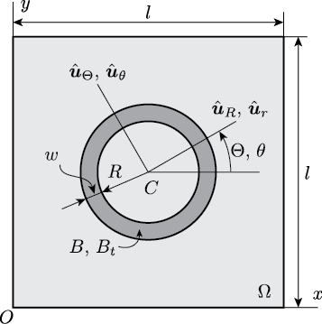
|
The cylinder is located coaxially with respect to that of the box and it is subjected to the hydrostatic pressure of the fluid \(p_{i}\) and \(p_{o}\) at its inner and outer walls, respectively. Negligible body forces are acting on the system and there is no inflow or outflow of fluid across the walls of the box. Since both the solid as well as the fluid are incompressible it is expected that neither the cylinder nor the fluid will move at all. Therefore, the problem reduces to determining the equilibrium solution for the Lagrange multiplier field \(p\). The elastic behavior of the ring is governed by a continuous distribution of concentric fibers lying in the circumferential direction. The constitutive relation for the first Piola-Kirchhoff stress for the ring is then
\[ \hat{P} = -p_{\rm s} F^{-T} + \mu^{e} F \hat{u}_{\Theta} \otimes \hat{u}_{\Theta}, \]
where \(\mu^{e}\) is a constant modulus of elasticity, \(p_{s}\) is the Lagrange multiplier that enforces incompressibility of the annulus, \(F\) is the deformation gradient, \(\hat{u}_{\Theta}\) is a unit vector in the circumferential direction in the reference configuration. Enforcing the balance of linear momentum and boundary conditions, it can be shown that the exct solution to this problem is as follows:
\[ p= p_{o}=-\frac{\pi \mu^{e}}{2 l^{2}} [ (R+w)^{2}-R^{2}] \quad {\rm for}~R + w \leq r, \]
\[ p= p_{s}=\mu^{e} \ln (\frac{R+w}{r})-\frac{\pi \mu^{e}}{2 l^{2}} [ (R+w)^{2}-R^{2}]\quad{\rm for}~R < r < R+w, \]
\[ p= p_{i}=\mu^{e} \ln (1+\frac{w}{R})-\frac{\pi \mu^{e}}{2 l^{2}} [ (R+w)^{2}-R^{2}]\quad{\rm for}~r \leq R, \]
In our numerical simulations we have used \(R = 0.25\,{\rm m}\), \(w=0.06250\,{\rm m}\), \(l=1.0\,{\rm m}\) and \(\mu^{e}=1\,{\rm Pa}\). For these values, the above exact solution gives \(p_{i}=0.16792\,{\rm Pa}\) and \(p_{o}=-0.05522\,{\rm Pa}\). In our numerical solution, we have also used \(\rho=1.0\,{\rm kg}/{\rm m}^{3}\), dynamic viscosity \(\mu=1.0\,{\rm Pa}\!\cdot\!{\rm s}\), and time step size \(h=1 \times 10^{-3}\,{\rm s}\). In addition, we have used \(Q2\) elements to represent the displacement \(w\) of the solid, whereas we have used (i) \(Q2/P1\) elements, and (ii) \(Q2/Q1\) elements to represent the velocity \(v\) and Lagrange multiplier \(p\) over the control volume. In the figure below a sample profile of \(p\) over the entire control volume and its variation along different values of \(y\), after one time step for \(Q2/P1\) elements.
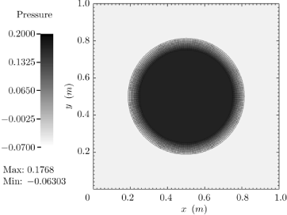
|
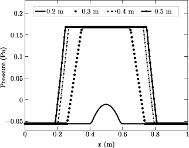
|
In the figure below a sample profile of \(p\) over the entire control volume and its variation along different values of \(y\), after one time step for \(Q2/Q1\) elements.
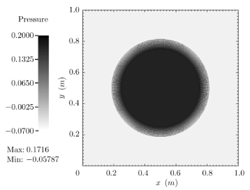
|
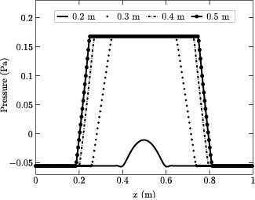
|
We assess the convergence property of our numerical scheme by obtaining the convergence rate of the error between the exact and the numerical solutions of this equilibrium problem. The order of the rate of convergence (see the tables below) is \(2.5\) for the \(L^{2}\) norm of the velocity, 1.5 for the \(H^{1}\) norm of the velocity and \(1.5\) for the \(L^{2}\) norm of the pressure. In all these numerical tests we have used 1856 cells with 15776 DoFs for the solid.
We report the results obtained by running our code with the parameter file LDCFlow_Ball_DGP_INH1_param.prm. Referring to the figure below, the disk has a radius \(R=0.2\,{\rm m}\) and its center \(C\) is initially positioned at \(x=0.6\,{\rm m}\) and \(y=0.5\,{\rm m}\) in the square cavity whose each edge has the length \(l=1.0\,{\rm m}\). Body forces on the system are negligible. The constitutive model for the immersed solid is as follows:
\[ \hat{P} = -p_{\rm s} I + \mu^{e} F, \]
where we have used the following parameters: \(\rho=1.0\,{\rm kg}/{\rm m}^3\), dynamic viscosity \(\mu=0.01\,{\rm Pa}\!\cdot\!{\rm s}\), shear modulus \(\mu^{e} = 0.1\,{\rm Pa}\). The prescribed value of the horizontal velocity is \(U=1.0\,{\rm m}/{\rm s}\). For our numerical simulations we have used \(Q2\) elements to represent the displacement \(w\) of the disk whereas we have used \(Q2/P1\) element for the fluid. The disk is represented using 320 cells with 2626 DoFs and the control volume has 4096 cells and 45570 DoFs. The time step size \(h=1 \times 10^{-2}\,{\rm s}\). We consider the time interval \(0 < t \leq 8\,{\rm s}\) during which the disk is lifted from its initial position along the left vertical wall, drawn along underneath the lid and finally dragged downwards along the right vertical wall of the cavity. This is shown in the figure below.
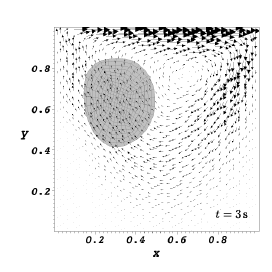
|
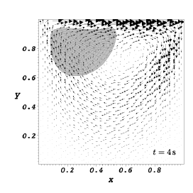
|
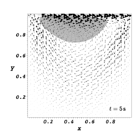
|
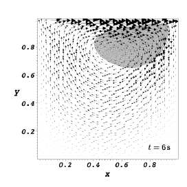
|
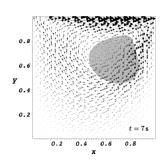
|
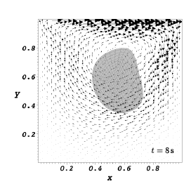
|
 1.8.7
1.8.7